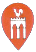
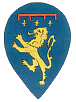
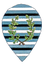
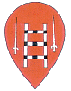
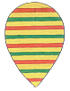

|
- LE CONTRADE SOPPRESSE -
|
|
 GALLOBandiera rossa con al centro una porta di colore bianco, a due archi, sormontata da un gallo Comprendeva un territorio attualmente definibile tra: la Costarella de’ Barbieri, Piazza Indipendenza, via di Diacceto, via dei Pellegrini, via di Città fino al Chiasso del Bargello. Comparve nelle pubbliche feste negli anni: 1499, 1518, 1532, 1534, 1536, 1560, 1578, 1581, 1583. Compagnie Militari: Porta Salaia.   LEONE LEONEBandiera: bianca con lista nera trasversale (Santo Stefano); rossa con lista bianca trasversale e due quadrelli di un rosso più scuro (San Vincenti). Si chiamò Leone perché si presentò alle pubbliche feste con una macchina rappresentante il Leone rampante con, nella branca, una stella (emblema tratto dalla Casata dei Pecci che nel XV sec. abitavano in questa Contrada ed ai quali l’Imperatore Sigismondo nel 1440 aveva concesso di aggiungere una stella al Leone). La scelta di questo emblema fu fatta perché il Leone non venisse confuso con quello dei Fiorentini. Comprendeva un territorio attualmente definibile tra: Santo Stefano alla Lizza, Poggio di San Prospero, Chiesa di San Vincenzo, strada di Campansi, piazza Paparoni. Comparve nelle pubbliche feste negli anni: 1507, 1516, 1532, 1541, 1581, 1590. Compagnie Militari: Santo Stefano e San Vincenti.  ORSOBandiera azzurra con Leone d’oro sormontato dal rastrello rosso e tre gigli d’oro. Si chiamò Orso perché si presentò alle pubbliche feste con una macchina raffigurante l’animale da cui prese nome. Comprendeva un territorio attualmente definibile tra: piazza Tolomei fino all’Arco dei Rossi e, tornando indietro, via dei Termini, piazza Indipendenza, via delle Terme, via di Città, via Banchi di Sopra fino a Piazza Tolomei. Comparve nelle pubbliche feste negli anni: 1499, 1516, 1532, 1536, 1541, 1581, 1588, 1591. Compagnie Militari: San Cristoforo.  QUERCIABandiera azzurra a liste bianche e nere con al centro una provenca (ghirlanda) di quercia. Comprendeva: Monistero, fuori Porta San Marco. Comparve nelle pubbliche feste unitamente alla Contrada della Chiocciola. Compagnie Militari: Monistero.  SPADAFORTEQuesta Contrada ebbe origine dalla Corporazione dei Battilana che in via del Porrione svolgeva la sua attività. Bandiera rossa con al centro una scala di colore bianco a pezze nere e, ai lati, due spade. Comparve nelle pubbliche feste nel 1532. Nel compendio delle deliberazioni del Collegio di Balia, Parte I, Codice esistente nell’Archivio di Stato di Siena, al margine del Foglio 484 Libro 37, carte 134: «23 Giugno 1673» - ed in corpo del foglio stesso è detto: «Fu proposto in Balia un memoriale della Contrada della Torre nel quale era esposto come gli uomini di detta Contrada hanno avuta notizia che la strada di San Martino con altre, vogliono fare una Contrada da sé, e disegregarsi da loro, e ciò può accadere in loro pregiudizio: supplicano pertanto il Collegio a volervi provvedere... Nel 1675 (29 Giugno) la Spadaforte si presentò al Prato di Camollia per ricevere il cavallo per correre il Palio. Ne sorse una controversia poiché fu chiesto dalle altre Contrade, e soprattutto da quella della Torre, se la Spadaforte fosse realmente una Contrada non avendo questa una sua influenza territoriale. La cosa sollevò un vivace dibattito tanto che la Balia fu del parere di non correre il Palio che fu offerto alla Madonna di Provenzano. Nel 1693 la Spadaforte chiese nuovamente di correre il Palio, ma le fu proibito. La soppressione di questa Contrada e delle altre, Leone, Vipera, Quercia, Orso e Gallo, viene fatta risalire all’anno 1675. Tuttavia ciò è poco probabile poiché, tenuto conto di quanto contenuto nel libro di Balia sopra citato, le Contrade in argomento anteriormente al 1675 erano già inattive e di fatto facevano parte delle Contrade giunte fino a noi. Compagnie Militari: Spadaforte (dal nome di uno dei Signori di Sticciano che aveva un palazzo nella zona).  VIPERABandiera gialla a liste rosse e verdi. Comprendeva la zona di San Giusto fino al vicolo de’ Pagliaresi ed il Rialto. Comparve nelle pubbliche feste negli anni: 1499, 1507, 1516, 1518, 1532, 1534, 1536, 1560, 1581, 1583, 1587. 1591, 1593. Nel 1648 vinse un Palio con le bufale. Compagnie Militari: Realto, San Giusto. |